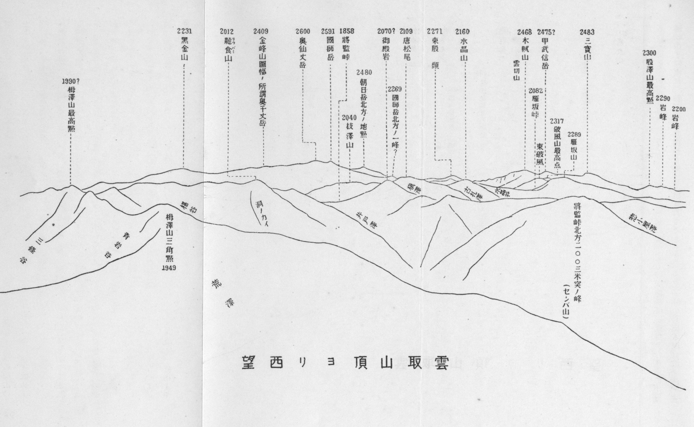
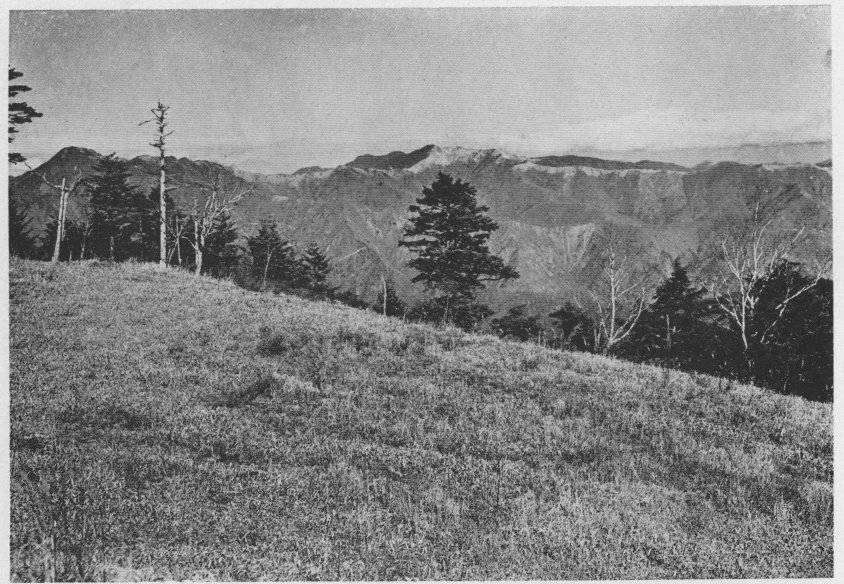
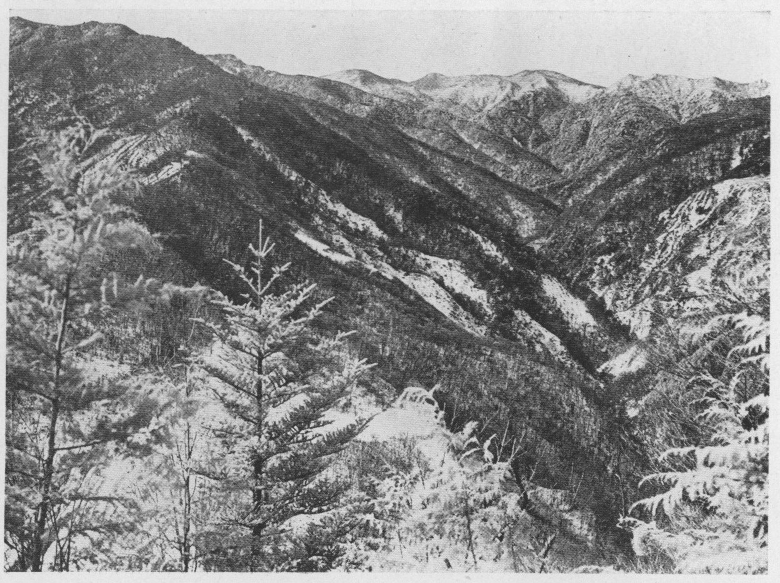
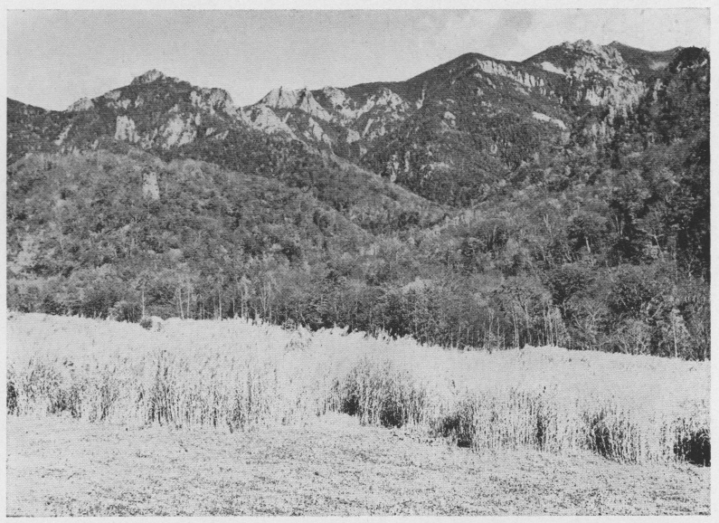

何の為に山へ登るか。自分は
此稿を書こうとして、筆を持ったまま
考に耽っていると、
不図心の奥でひそやかな声がそう囁いた。
然し自分は今
茲にそれを論じようとしていたのでは勿論ない。
唯秩父山脈が首都に近い割合に、相当の高さと深さと
大さとを有し、麓に一ノ瀬、梓山、栃本などの愛す
可き山村を抱いて、二、三泊の旅行ならば、充分に楽しい愉快な山の気分を味わうことが出来るのに、登山者の少ないのはどういう訳だろうと訝しく思っただけである。言わばわが娘に縁談の遠いのを不思議がる親達が「何故だろう」と首を捻るのと似たようなものであろう。
昔の人は信心で山に登った。従って山の大さ高さ深さなどは、別に問う所でない。勿論初めて
其山を開いた僧侶とか行者とかは、各自に信仰の芽生えが一度わが信徒の胸に萌え出したならば、
益々深く
且堅く其根を張るに都合よき条件――森林、瀑布、奇岩、噴湯、火口、火口湖等の如き――を備えているらしい山を選んだものに相違ないことは、言う迄もあるまいが、信条の命ずる
儘に黙って向上の道を辿る信徒に取りては、登山そのものの
外他に何等の目的が有る可き道理はない。こんな生一本なひたむきの登山は昔の人に限られた特権であった。
夫に較べると吾等の登山は頗る複雑になって来た。そして小さい低い浅い山よりも、大きい高い深い山を狙うようになったのは、登山の発展に伴う必然の結果というてよかろう。あの山を平げた
若しくは片付けたというような言葉は、どんな意味を語っているか。無事に御山を済せて
目出度いと喜んだ昔に較べると、これは馬上の将軍が敵国を征服して、鞍に倚って睥睨する時の態度にもたとえられよう。自分が茲に書こうと思う秩父の奥山は、辛うじて最高二千六百
米を超えている
許りである。山を征服せんとする血気の荒武者には、それだけで既に物足らぬ感が起るに相違ない。これが秩父山脈に登山者の少ない原因であろうか。然し自分は昔の人のように真面目な山登りをしたいと努力する人の少なからぬことを信じて疑わない者である。
秩父は我国でも古く開けた土地の部に入る可き者で、
知々夫国造の創置されたのは、
崇神帝の朝にあるといわれている。
兎に
角秩父の名は和銅開珎と共に世に流布されていたにも
拘らず、其山に就ては近頃まで多く知られていなかった。
武蔵峰、
秩父嵩などの名前が古書に散見するが、勿論これと一峰を指して唱えた名称ではあるまい。夫すら大勢が寄ってたかって、いつの間にやら大宮の南一里に
聳立する武甲山の異名にして
了った程だ。自分の
所謂秩父奥山が、
僅に一、二を除くの外、絶えて記載されたことのない山許りであるのも無理はない。『新編武蔵風土記稿』は、武蔵に関する地志の上乗なる者である。それですら総説の部に於ては、
纔に武甲、両神、
三峰の三山しか挙げてない。秩父郡の条に入って漸く
雲採、白岩、
大洞等二、三の山名と、十文字峠
及雁坂峠の名を知り得るのみである。『甲斐国志』とても武甲国境の山名を記載した数は、決して『武蔵風土記稿』の上に出る者ではない。独り『武蔵通志』
（河田羆著、写本）のみは、近時の編述に係る上に、斯学に造詣深き著者が各町村の書上げを綜合して書いた者なので、
流石に一頭地を抜いて、各山の記述詳細を極めている。後にも引用の必要があるから、山岳編の中に就て、此稿に関係ある部分だけを抄出することにした。
秩父郡大滝村ノ西ニアリ、高八千五百五十三尺（地理局実測）山脈東ハ雁坂嶺（高六千八百六十九尺（実測）南ハ甲斐東山梨郡釜川村ニ通スル支道ニ係ル）枝沢山（高五千尺南ハ甲斐釜川村ニ至ル）槙沢山（高七千尺同村南ハ甲斐釜川村神金村ニ至ル）千葉山（一大仙波ニ作ル高八千尺南ハ甲斐神金村ニ至ル）牛王院山（高七千尺南ハ甲斐神金村ニ至ル）大洞山（高六千三百十五尺（実測）以上同村ニ属ス）ニ連リテ三峰山ニ接シ、甲斐国界ヲナシ、西ハ破風（高九千尺南ハ甲斐釜川村鶏冠山ニ接ス）木賊岳（高九千尺南ハ同上）又北ニ転ジテ真ノ沢山（高一万尺西ハ信濃南佐久郡梓山村ニ至ル）股ノ沢山（高七千尺西ハ同上古金鉱アリ天正中武田氏之ヲ鑿シ徳川氏ノ時復之ヲ採掘ス山腹東南ニ洞口八十許ヲ存ス）岩戸屋山（高四千五百尺股沢山ノ東脈ニシテ支脈南荒川北中津川間諸山トナル以上同村ニ属ス）十文字嶺（高七千五十五尺（実測）西ハ信濃梓山村ニ界ス）松尾山（高四千三百尺西ハ同上）三国山（高五千五百尺西ハ同上北ハ上野南甘楽郡楢原村ニ界ス三州ニ跨ルヲ以テ此名アリ字猿市ヨリ上八十八町以上同村中津川ニ属ス）ニ至リ、信濃上野国界ヲナシ、南ハ甲斐釜川村（東山梨郡）山岳ニ連ナル。諸山共ニ檜栂赤松ノ属茂密ニシテ、良材多シ。
国司岳とあるものは恐らく今の
所謂甲武信岳
又は
三宝山を指したもので、他の少数の著書や地図と同じ誤謬に陥ったのであろう。そして一連の山脈を中途から両断して、
破風山と雁坂嶺とを西と東とに分って筆を起した為に、国司岳がこの二山の間に位置するが如き有様となったが、
金峰奥仙丈の山脈を除いた秩父奥山の喬岳は、
略ぼ羅致してあると思う。標高が今日の者と相違しているのは、厳密なる測量の結果で無いのであるから
已むを得まい。
秩父山脈の構造というようなことは、素人の自分に分ろう筈はないが、従来の地質図に色別してある秩父古生層と花崗岩
若しくは石英閃緑岩との
区劃線は、頗る怪しい箇所が有ることは断言するに躊躇せぬ。例せば甲武信岳の如きは、これまで古生層の山として記載された
申訳に、頂上附近に
僅か
許りの古生層の岩片を戴いた花崗岩の山である。
其北の三宝山は勿論、東に連る雲切、破風の二山は、全部花崗岩から成っている。そして雁坂峠から
将監峠に至る間の連山は、頂上に露出している花崗岩（破風山附近から花崗岩は或は石英閃緑岩に変っているかも知れぬ。
此二つの岩石は少くとも此地方では、専門家でさえ容易に区別することの出来ない岩相を呈しているとの事であるから、自分は二者を包含して仮に花崗岩と名付けて置く）を見ないが、二、三百米を下った谷間には、武州側にも甲州側にも少なからず露出の箇所があって、渓流には花崗岩の大塊がごろごろしている。これは荒川の谷ばかりでなく、花崗岩には縁の遠いと想われる中津川の上流にさえ見られる。将監峠以東では地表に呈露している処は無いらしい。想像するに秩父方面では
大洞川を界として将監峠に達し、竜バミ谷を甲州方面に下って、一ノ瀬川から泉水谷を遡り、大菩薩峠の西を其連嶺に平行して南下せしめた線が、東は秩父及び
小仏古生層西は花崗岩の分界と見て差支ないようである。これは勿論地表に追跡し得る花崗岩に就ていうのである。
この花崗岩の山塊は、甲府盆地を中に向い合っている駒ヶ岳山塊と余り隔たらぬ時期に迸発したものであろう。そして其当時に在っては互に高峻を競ったものではあるまいか。それが第三紀に起った北日本の大変動の際に、金峰奥仙丈の山塊は一度低下して後再び隆起したのであるが、遂に元の高さに復することが出来ず、
反て八ヶ岳のような大火山を附近に
崛起せしめたのであろうと、
贔負目の大太鼓を叩いて置く。
自分が幾年かの前に初めて秩父の地に足を入れたのは、丁度朝の露が枯葉に結ぶ霜と変って、小春日和の
長閑な空に柿の実が赤い頃であった。山の峡からはもう炭焼の烟が立って、近い赤城山の
黒檜や地蔵の頂にも雪が降っていた。真綿を引き伸したような雪雲は、遠い越後界の山山を包んで、ぼやけた雲の先から冷い風が吹いて来た。
然し秩父の連山は一点の曇も無く、ちぎれ雲の漂う南の空に、紫を帯びた藍の
透徹るような色に聳えているのが堪らなく嬉しかったのである。東上州から見た冬の秩父連山は、
啻に色彩がうるわしい許りでなく、自分には更に懐しい思い出の湧く山である。或年の冬であった。日は
御荷鉾山の後に落ちて、其あたりの天は黄金色に輝き、
夫より地平線に沿うて東するに連れ、樺色桃色草色と色美しく
凪ぎ渡った夕暮の空に、紫と紺とを濁らぬ程に混ぜて、幾度か塗り上げたような深い色の秩父連山が、劃然と画き出されたのをふと心付いて眺めた時には、未だ十一、二の少年であった自分も、
紙鳶の糸を巻くことさえ忘れて、磁石に吸わるる鉄のようにひたと眼を引き付けられて仕舞った。怪しくも山に魅入られた自分は、其以来山を愛する外に仕方無かった。十月の末、夏は
草雲雀の楽しい住家であった桑の葉が、人の
跫音にもかさかさと音がして、脆くも落ち散って
了った桑畑の上に、遠近の山が鮮かに望まれる日が多くなると、水の涸れた田圃の小溝に枯柴を敷いて、其上に仰向けに寝転びながら山を見て居るのが楽みであった。西北の風がそよそよと吹く好晴の日には、
目路のはてにそそり立つ高い山の
巓を、赤蜻蛉が列を作ってすいすいと飛び越して行くのが面白いと思った。そして眼はいつの間にか南の空に
縹緲として
積翠を湛えた秩父の山奥深く迷い込んで行くのが常であった。この頃でも秩父山という名は絶えず村の人が口にしていたものであるが、東西の御荷鉾山は別として、怪奇な姿をした両神山の名は、既に知らぬ人が多かった。
況して三宝、甲武信、雲切の諸山から東に
亘る長い連嶺の如きは、僅に武甲山を除くの外、村の物識りと許された老人すら、試に自分が指点した山に対して其名を教えることが出来なかった。一度自分はもどかしさの余り、三峰参詣の人に頼んで山の名を聞き
糺して貰った時、其人は雲取山の名を
齎し帰ったのは好いが、可笑しいことにはどの山が夫であるか遂に分らなかった。秩父山は依然たる大きな謎の塊で、幾多の峰は夫々解き難き一の謎のように想われた。自分が遠望して山奥深く迷い込んだと書いたのも、
強ち無理ではあるまいと思う。
然し謎は
終に解かれた。如何なる想像の大飛躍をも妨げなかった謎の秩父奥山は、旅行の
度毎に輪廓だけを朧げに残して次第に消え失せた。同時に強く自分の眼を刺戟した山肌の部分が、次から次へと代って其位置を占めた、木喰い虫が虫糞でその穿った孔を填めて行くように。恐らく三千年来の謎であった
埃及のスフィンクスが、其体内に埋蔵していた殿堂や、其頭上に穿たれた大きな孔の何であるかを解かれたのを最後として、世に謎の種は尽きたのではあるまいか。少くとも自分はわが秩父奥山を床しい謎として
其儘保存して置いた方が幸福であったかも知れぬ。そう思うと自分は鉄砲虫のように山に喰い入って、殆んど完膚無きまでに解剖し批評し叙述し描写しなければ満足することの出来ない人間の欲望を呪い
度なる。それにしても人は自然の前に出ると、誰しも悪戯盛りの子供のようになるものと見える。如何なる秘密の玉手箱も開けて見ぬ内は虫が納らない。黙々として
而も偉大なる山は、この我儘を可愛さに堪えぬ慈母の眼をもって眺めて居るのであろう。
秩父に対する自分の概念というようなものが変ったと同じ様に、秩父其物も
亦変りつつあるのは如何にも惜しい。十八、九年前に自分が初めて十文字峠を通った時には、昼も頭の上が暗い程に樹は茂っていたが路はよかった。其後通る度に路は荒れて反て木立が透いて来た。何々組林業事務所などいう嫌な札が路傍に建てられてあるのを見るようになった。炭焼竈の烟が一年は一年よりも数多く
且山深く進んで行く。聞けば一万二千町歩に近い秩父の森林は、既に東京、横浜其他の富豪に買収され、殊に奇峭を誇る両神山の如きは、殆んど全山を挙げて二、三者の所有に帰して了った
相である。上武鉄道が間もなく大宮まで達するの日は、やがて秩父山林の荒廃という大悲劇が、森林伐採の序幕を
以て開かれるのではあるまいか。土地の人は鉄路の延長に依て得らる
可き運輸の便利をひたすらに喜んでいるが、石炭の烟は自然を破壊する恐る可き勢力の先駆者であることを忘れている。想うに今日の秩父は、渓流の
澄
と森林の
蓊鬱と景趣の
幽邃とに於て、其権威の絶頂にあるものである。そしてこの幽邃とこの蓊鬱とこの澄
とを奪われた惨ましい秩父山岳の姿は、遠からず濁った水と「石の洪水」とに悩まなければならない秩父の住民が、知らずに犯した罪の報の余りに酷いのに慄れ戦きつつも、反て其苦痛を緩和する唯一剤として、朝夕に仰ぎ
視るようになるのであろう。

雲取山頂より西望
前置が長くなった。急いで本文に取り掛るが、其前に
尚お一言を費したい。
茲に秩父の奥山と題したのは、大宮方面から見て秩父の奥に在る山という意味からであるが、東は雲取山から西は甲武信岳を経て金峰山に至る迄の武甲
及甲信の国境山脈を合せて此中に含ませることにした。この両国境山脈は一貫して秩父山塊の脊梁をなしている者である。二千
米突以下の山を除いた為と、金峰山以西の山を知らないこととは、自ら記述の範囲を此二山の間に限って了った。地図は陸地測量部五万分の一の丹波、三峰及金峰山の三図幅を参照されたい。
試に此山脈に駢峙する二千米以上の峰を東から数えて見る。先ず雲取山を起点として、大洞山（飛竜山）、竜バミ山、和名倉山（白石山）、
牛王院山（御殿岩）、唐松尾、枝沢山、
燕山、
古礼山、水晶山、雁坂山、破風山、
木賊山（雲切山）、甲武信岳、三宝山（真ノ沢山）、股沢山、富士見、東股頭、国師岳、奥仙丈岳、朝日岳、金峰山等、合せて二十余山を挙げることが出来る。更に甲武信、国師附近の数峰と、金峰山以西の
瑞牆山、小川山等を加えたならば、其数優に三十以上に達して、而も最高峰は二千六百米に及んでいる。関東大平原の西半部をぐるりと馬蹄形に取り巻いた山の中で、秩父山脈と日光火山群とは、互に馬蹄形の一端に位置して、頗る趣が似通っているのみならず、南北日本アルプス地方を除けば、何処へ出しても後れを取らない所は、正に関東の両大関と云うてよかろう。
平地に波瀾を起した幾多の小山脈が、彼方からも此方からもアミーバの偽足のように絡み合って、いつとなく五、六本の太い脈に綜合され、それが更に統一されて
茲に初めて二千米以上の高峰となった者が雲取山である。甲信武甲の国境を東走して来た秩父山脈は、どの道この辺でこれ位な高度の山を
掉尾に
振い起して、武蔵野に君臨せしめなければならない筈だ。高さ二千十七米七。東京方面から見た
此山のくっきりした男性的の姿は、如何にも気持が好い。『武蔵通志』に
拠ると、此山は大雲取と呼ばれ、南に続く小峰が小雲取と呼ばれている。
大雲取山 西多摩郡氷川村、日原村ノ西北ニアリ、秩父郡大滝村ヲ界ス。高七千三百九十五尺
（神奈川県測量ニ拠ル下同）山中深高ニシテ
栂、
椴、
山毛欅、
楢ノ属喬鬱森立シ、樹皆蒼古、老蘇之ヲ覆ヒ、人跡殆ド絶シテ、猟夫モ到稀ナリト云フ。山脈磅

トシテ四旁ニ展敷シ、西北ハ秩父郡諸山ニ連リ、南ハ小雲取山
（高七千二百八十一尺北ハ秩父郡西ハ甲斐北郡都留ニ界ス）唐松谷峰
（高六千七百六十一尺南七巨厳駢立シ下ニ七石社アリ甲斐丹波山村之ヲ七石山ト称ス）ヨリ大躑躅峰
（高六千五百六十四尺）ニ至リ、赤指山
（高四千五百二十尺留浦村ノ西南ニアリ）雨乞場山
（高三千九百七十一尺同村ノ南ニアリ）トナリ、甲斐北都留郡ヲ界シテ多摩川ニ至リテ尽ク。
頂上はさまでは広くは無い。絶頂三角点の在る所から、傾斜の緩い茅原の尾根が南へ曳いて小雲取から
七石山へと続いている。東から北へかけては一面に黒い針葉樹の林である。その黒い針葉樹に頂上まで包まれて、近く東北に聳えているのは、二千米に
垂んとする芋ノ木トッケ
及白岩山である。武甲の国境は、三角点より二町余も南寄りの所から西へ出た尾根に当るので、丁度
其分岐点あたりに、小島氏の
所謂赤石板岩が少しばかり露出している。其外には頂上附近に岩石は無いように思った。
登路は、三峰神社から白岩山を経て登るものと、鴨沢村から七石山を経て登るものと二つある。前者には強石から大血川に沿うて大日向山太陽寺に至り、昼ヶ岳を経て三峰口の登路に合する路があり、後者には氷川村か小河内村から、尾根伝いに鷹巣山に至り、七石山にて鴨沢口の登路に合する路がある。鴨沢からは四時間、三峰からは五時間あれば頂上まで登れる。鴨沢口は殊に楽な路である。三峰方面は水に乏しいが、鴨沢口ならば七石山の頂上直下に
滾々と湧いている。雪は稀に五月下旬まで残ることもある。
然し大抵は其月の上旬か中旬に解けて仕舞う。雪の無い時この連嶺を縦走しようとする人は、水の用意が肝要である。六月初旬に
三頭山の頂上から、此山を盟主とした連嶺を北方乱雲の絶間に仰ぎ見た時の雄大な感じは、未だに頭に残っている。
雲取山から少し急な尾根を西に下ると、三十分
許で鞍部に出るが、直ぐ上りとなって間もなく一峰に達する。
是は荒沢の源頭に当る山で、荒沢山と呼ぶ
可きであるが、
此辺から秩父では大洞山を通称として、西は遠く竜バミ山までも含んでいるらしい。この附近は一面の小笹である。南の甲州側は急な谷で、樹は甚だ稀であるが、北の秩父側は所々に闊葉樹を交えた針葉樹の密林である。概して甲州側に木の乏しいことは、秩父山脈の特色の一つというてもよい。千九百四十九米三の三角点のある峰は、栂沢の上に
峙つ山であるが、名は知らない。栂沢山と呼んで差支なかろう。甲州では此附近を三条ダルミと呼んでいるそうである。此山から雲取山までは二時間あれば楽々と行かれる。
此処を下って西南の小峰を指して登ると、山相が一変して岩が多く、従って尾根が狭く急となり、
石楠や
馬酔木の曲りくねった枝が行手を遮ぎる。四つ許りの同じような峰（其中の一は三角点のある峰よりも高い）を
踰えると、尖った岩峰が二つ三つ突立って、針葉樹のいじけたのが妙に意地悪くのさばっている。尋常では容易に通れないのであるが、
幸に切明けがあるから何でもない。地図に三ツ岩とある者が
夫である。此処を通り過ぎて緩い傾斜を登り切ると、大洞山の最高点二千八十九米一の三角点に達する。絶頂は三角点より二、三十間程西へ寄っている。高さも二米位高い様に思った。元と大洞山という名は秩父方面の称呼であって、前にも記したように範囲が広い。甲州ではこの最高点を飛竜と唱えている。絶頂を西南の方へ二町許下りた所に飛竜権現の社があるので左様
謂うのであろう。『甲斐国志』にも
飛竜権現ノ社 慶安中ノ鰐口、文明年中ノ棟札アリ。別当宝蔵寺。
と記載してある。
然し飛竜の名は秩父には通用しない。同様に大洞の名も甲州方面には稀にしか役に立たぬ。自分が曾て
南日（田部）君と雲取山に登った時、当面に雄偉な状貌を呈している此山を指して、鴨沢から丁度
道普請に来た人夫に、あれは大洞山かと聞いても、容易に
其意味が通じなかった。一般の例から推せば、大洞川の本流ホラノカイの源頭に聳ゆる峰即ち竜バミ山が、大洞山の名を冒す
可き筈で、
茲にいう大洞山は、
椹谷の名で呼ぶのが普通の命名法であるが、大洞川の上流では此山が最高である所から、其名を負うようになったのであろう。竜バミの名も元禄の図に書き入れてあるから古い山名である。自分はすべて旧に
拠ることにした。尤も此山の登路は、雲取山
若くは将監峠から尾根伝いに登る外には、丹波山村から一条の登路がある許であるから、従って飛竜の名の方が実際には必要な訳である。

●飛竜山と雲取山（大菩薩峠附近より）
大洞山の最初の登山者は誰であったか元より分らぬ。自分の知っている限りでは、明治四十五年の春に、丹波山村から登った南日、中村の二君が先登第一の人である。此山から南東に派出した雄大な尾根が其登路で、四時間程で登れると聞いた。此山を飛竜と呼ぶこと、地図にある三ツ岩を三ツ山と呼ぶこと、其東の方を一体に三条ダルミと呼ぶこと、地図に後山川（丹波山村ではこのあたりの国境山脈を総称して
後山と呼んでいる）とある川を親川と呼ぶこと、親川を遡ればどの谷からも尾根へ登れることなど、皆其時に判然したのである。村からの登路は楽であるが、千九百三十九米の前飛竜の辺からは、石楠などが
蔓るので（途中に石楠横手の字がある）、多少の困難を感ずるそうである。此山から雲取山まで四時間あれば充分であるが、急げば三時間に短縮されぬことは無い。
多摩川の上流一ノ瀬の奥に三ノ瀬の部落がある。
其処から秩父へ
踰える将監峠を登ること一時間半で、頂上の平坦地に出る。右に折れて下り気味に一町
許行くと、広い鞍部が竜バミ谷の方面へ豁然と開けて、程よく配置された若い唐松の林などが目を
怡ばせる。左手はこんもり茂った針葉樹の木立に囲まれて、井戸沢の清い
流が大きな花崗岩（或は石英閃緑岩）の間から、快い音を立てて湧いて来る。
側には石で築いた
竈があり、不完全ながら小屋もあった。今も残っているかどうか分らぬが、
申分の無い野営地である。
此処から右に尾根を伝いて四十分登れば、高さ二千十一米八の竜バミ山へ出られる。井戸沢や
洞ノカイの方面は、針葉樹で凄いように暗いが、南方は遠く開けて眺望が好い。南アルプスが駒、
朝与から
聖、
上河内、
笊に至るまで一目に見られる。十一月中旬、此山から初雪を戴いた
白峰赤石の連嶺を遠望した時には、とても黙って
凝として居られなかった。路は短い笹原の中を緩く登っている。この頂上から飛竜へは二時間あれば行かれる。切明けの跡や、査何号と記した小さい標木があるので、少し注意すれば路を誤る心配は無い。が、木が枝を指し交したり、丈の高い笹が
蔓ったりして、歩くに骨が折れる。小さい峰と言うよりも寧ろ凸起を十ばかり越すと、椹谷と大常木谷との分水嶺で、これから飛竜の登りとなるのである。飛竜も此方面は栂の大木が茂って、下は一面に梭葉草が生えている。秩父街道から眺めた大洞川の谷は、左右の山裾が幾多絶大の人の字、入の字を
倒しまに重ね合せて、奥は深く
且つ暗い。今其源頭に立って覗いて見ても、
窈として大洞川の名に背かないことが頷かれる。
将監峠の頂上から左に折れて、井戸沢を右下に見ながら山腹を辿ると、間もなく一の尾根に出る。
此尾根は純秩父の最高山二千三十六米の和名倉山が、牛王院山（御殿岩）と連絡する為に正南へ派出した者で、三峰へ下る峠の路は、此尾根を和名倉山の頂上へかけて通っている。新旧の両道があるとのことであるが、地図に載せてあるものは新道の方であるか旧道の方であるか、自分は此山へ登ったことが無いので確としたことは言えぬ。三峰路の途中から左に分れて大ヨケ谷を下れば、栃本へ出られるそうである。
又滝川谷へ下る林道もあるとのことであるが、判然しない。恐らく牛王院山（御殿岩）の北側を通って
雁峠の路へ合し、雁坂峠の新道へ出て栃本へ下るのではあるまいかと思う。地図に白石山と記載してあるのは、相当の理由があってのことであろうが、白石神社の在る白石山や、又は白岩山などと紛れ易い。宜しく秩父は勿論甲州でも通用する広い名称の和名倉山に改むべきである。梅沢君の話によると、頂上附近に白い岩があるのだそうである。尤も同君は目撃した訳では無く、
人伝に聞かれたのであるから、間違った所で抗議にも及ぶまい。
若し又白い岩があって、
夫が花崗岩であるなら面白いと思う。自分等同人は和名倉の名を聞くと、雑木の茂った尨大な山塊が目に浮ぶと共に、馬力尊と書いてある珍らしい石碑や、秩父名物狼餅のことまで想い出されて、腹の底から込み上げて来る可笑しさに、ドット笑わずにはいられない。秩父とは切っても切れぬ関係のある名である。石川光春君は此山に登られた最初の登山者ではあるまいか。
中央東線の塩山駅から青梅街道を北に向って柳沢峠を
踰えると、間もなく落合の部落があり、
其処から左に折れて一ノ瀬へ行く途中に犬切峠というのがある。其頂上から北を望むと、正面に黒木の茂った余り高低のない一連の
峰巒が見える。左の低い笹原が秩父の
所謂雁峠で、一ノ瀬では燕ダルミ
又は笠取峠と唱えている。雁峠から右に引き上げた緩い草原の斜線が、
一頓して二つ三つ波を打った者が笠取山で、『甲斐国志』に所謂
袴腰山に当り、其東は栂の大木が黒く茂った枝沢山である。秩父では特別の名を持った山の外は、総て沢の名を其上の山に冠らせて、何沢のウラと呼んでいる。ウラとは梢の意味である。
而し地図や地誌には、古くから山又は峰の字が使ってあるから、自分も山の字を用いることにした。枝沢山は即ち枝沢のウラを
謂うのである。連脈の殆んど中央に臼の如き頭を
擡げているのが、最高点二千百九米一の唐松尾で、西は枝沢に臨んだ急な斜面が、細い尾根を枝沢山に結び付けている。東に延びた尾根は四つ
許の小峰を
駢べて、最後に尖った岩峰が目に入る。それが牛王院山（御殿岩）である。其処から南に四、五尺もある
篶竹の中を掻き分けて下ると、三十分で将監峠の頂上へ出られる。其間に三つ許り小さい峰があると思った。
元来
此附近の山は、二、三年前迄吾々には少しも知られていなかった。雁坂峠以東では大洞山が一番高い位に思っていたものである。曾て十文字峠の途上から此連脈を遠望した時にも、それは大洞山が西の方から眺めるので多少形を変えて見えるのであろうと信じていた。明治四十五年の春に中村、南日の二君が丹波山村に来て、初めて唐松尾の名を聞き、其山を見て帰ったのがもとで、吾々は此山に親しむようになった。其時両君は登山する
積であったそうだが、遂に果すことが出来なかった。自分は南日君に
慫められて、同年の八月に登山した。『武蔵通志』には、枝沢山の次に槙沢山、千葉山、牛王院山が挙げてあることは前に引用した通りで、千葉山の註に「一大仙波ニ作ル、高八千尺、南ハ甲斐神金村ニ至ル」と記してある。そして他は皆千葉山より低いので、それが主峰であることが窺われる。主峰とすれば自分等が唐松尾と称する者に当っている。其上槙沢は唐松尾の東を流れる大沢であるから、従って千葉山、槙ノ沢山、唐松尾なる名称は、同じ山の異名である
可き筈だ、後の二者に就ては全く疑うの余地は無い。
唯だここに不審なのは、『武蔵通志』が千葉山と槙沢山とを別個のものとして記述したことである。或は笠取山を枝沢山、枝沢山を槙沢山と誤認した為に、槙沢山と異名同山である千葉山を別に掲出したのではあるまいか。
兎に
角笠取山に近い沢は、葡萄沢であって枝沢ではないから、これは『武蔵通志』の誤記であろうと思う。千葉山と云う名は自分等は聞いたことはないが、秩父側の名称に相違あるまい。此連脈は甲州側から登るのが近く
且つ便利であるから、其地方の山名の方が実際は役に立つ。牛王院山は『甲斐国志』には護王院、『富士見十三州輿地図』には御王院となっている。甲州猟夫の所謂山ノ神尾根なる者がこれであろう。
唐松尾へは、一ノ瀬の奥にある三ノ瀬から直接登れる。村の北で
直ぐ将監峠への路に分れ、左へ三、四町行って坂を上ると、谷川が流れている。それを遡って
流の二分する所へ出たならば、其中間の尾根を登ると、二時間の後には頂上に立つことが出来る。三角点は地図に示す通り国境より二、三十間北に寄っている。測量の為に伐木した跡には、古生層の岩片が狼藉して、
稍荒寥の趣がないでもない。石楠の茂った岩蔭を縫いながら北へ三町許下ると、枝沢から上って槙沢へ下り込むよく蹈まれた道へ出るが恐らく
是は前に記した滝川谷の林道ではあるまいと思う。牛王院山（御殿岩）へは尾根伝いに一時間半で行かれる。日光の
女貌山を小さくしたような山で、岩間には
米躑躅が多い。枝沢山に続く尾根を西へ辿れば雁峠へ出られる。自分は唐松尾を西南に下った鞍部で野宿し、翌日枝沢山から雁峠へ下る予定であったが、容易に水が見出せなかった為に、
已むなく三ノ瀬へ引返したのであるから、遂に枝沢山の頂上を窮めることが出来なかった。それで此連脈に就ては遺憾ながら語る可き何物も無い。
然し見た所草丈が高く木が繁っているから、切明けが無いとすると縦走に多少の困難が伴うことだけは
確である。唐松尾の頂上から三時間あれば雁峠へ出られぬことはあるまい。
雁峠は将監峠に似ている。頂上の原は大きな鍋を伏せたような小山が幾つか並んで、凹凸は有るが余程広く、一面に小笹や篶竹が生えているのみで、木立がないから風情に乏しい。広川谷に向っている草原から清水が湧き出ている。井戸沢にはとても及ばないが、野営地として適当せぬことはない。北方栃本から葡萄沢を上って来た路は、此処で右と左とに岐れて、それぞれ広瀬と一ノ瀬とへ旅人を導いて
呉れる。
昭和四年修正同七年発行の三峰図幅（陸測五万分一）は、在来の牛王院山の名を削除し、新に将監峠附近に牛王院平の四字を記入した。現在ではこの方が実際に即しているのであろう。『甲斐国志』には護王院山或は「午王院ノ嶺東ヨリ渓水出テ云々」など山名として用いられ、それが唐松尾連嶺に充てられていたもののようである。然るに陸地測量部で実測の際、三角点を設置した連嶺の最高峰に唐松尾という名があることが判ったので、之を唐松尾測点と呼び、牛王院の名は其東に在る岩峰及び二、三の小突起を含めたものに漠然と与えられたのであったが、此岩峰には御殿岩の俚称がある。これは其南側に発源する御殿沢から来たものであろう。それで更に探究が進められた結果、牛王院は其本来の位置と名称とに復したものと思われる。独り牛王院のみに限らず、千葉山、袴腰山、古礼山等に就ても、私の記事に誤謬や曖昧の点が少なくないのは甚だ遺憾であるが、登山者など殆ど皆無であった是等の山々を紹介するに急なる余り、蹈査の及ばざる部分は『甲斐国志』や『武蔵通志』に頼りて記述した為で、当時としては誠に止むを得ない次第であった。詳しいことは田島勝太郎氏著『奥多摩』を参照して頂きたい。
雁峠から西北指して尾根を登ると、十五分で大きな岩の露出した峰に出る。これは燕山の一峰で、同じような小峰が五つ
許連っていると思った。西北のはずれの者が一番高く二千米を超えている。
此連峰も割合に樹が多い。殊に秩父側は針葉樹が茂って、じめじめした落葉の上に一面に梭葉草が生えている。
此処から尾根の向きが少し西へ直って、極まばらに唐松の生えた爪先上りの茅原が続く。二千米を超えた山の上とは思われない、まるで平地の林を歩いているような気がする。柳沢峠の頂上から北正面に見えるのが此山で、『甲斐国志』雁坂の条に
西ノ方ハ西沢御林山、南ノ方ハ袴腰ト云、山形ノ似タルヲ以テ名トス。
と記してある袴腰山はこれであろうと思った。尤も「似たるを
以て名とす」という程形が正しくはないので、
疑を挟む余地は充分にあるが、南方の山といえば先ず此の外にはないし、南日君も此名を聞いた事があるそうである。それで「最高点二千百十二米一。地図には古礼山としてあるが、古くから袴腰の名があり、
且つ現に
其名が用いられているのであるから、古礼山の名はよろしく其北方古礼沢と水晶谷との中間に在って、二千百六十米の小圏を有する無名の地点に移す
可きである」と書いたのであったが、袴腰山は前項に記したように、雁坂峠からは東南に位し、且距離も相当に隔たっている笠取山に外ならぬことを後に知った。この山ならば形がいかにも袴腰に似ているから、袴腰山の名があるのは当然であり、従って其西麓を通ずる峠の名を冠して笠取山などと称するには及ばなかったのである。それはともあれ、此山が袴腰山でないときまれば、地図に古礼山とあるのが正しいので、この名は輯製二十万の図にも載っている。すると二千百六十米の小圏を有する無名の山は、其北に発源する沢の名に
因りて、水晶山と呼ぶのが穏当であろう。ここで断って置きたいのは、これらの山名に就て広瀬方面は少しも探って無いことである。此水晶山は針葉樹の密林で、立派に切明けはあるが眺望は少しもなく、昼も薄暗い程であるから随分無気味な山である。西方に尾根を辿ること三十分で雁坂峠へ出られる。一ノ瀬から雁峠まで一時間半、雁峠から雁坂峠まで二時間の行程である。
凡河内躬恒が歌に
秋風に山飛び越て来る雁の羽むけに消ゆる峰の白雲
とあるものは果して
此山を詠んだものか否か、
穿鑿するにも及ばぬ事であるが、内務省地理局刊行の『新編武蔵風土記稿』所収秩父郡の正保図には
雁木坂峠の名が見え、元禄図には雁木峠となっている。
然し浅草文庫の蔵書印ある内閣本を見ると雁坂峠と書いてある。
其他内閣本
及東京府本の『正保武蔵図』を見ても、
孰れも雁坂峠である。それで雁木坂峠
又は雁木峠とあるのは、刊行本の
誤ではないかと思ったが、
能く比較して見ると他にも多少出入した所があるので、必ずしも刊行本の誤ではなかろうと思う様になった。或は刊行本の稿本となった者の方が
反て正本であったかも知れないとさえ想える。これは原本を見ない以上は断言出来ないが、果して想像した通りならば、峠の名の起りも推知するに難くない。けれどもこれに就ては
尚お充分に調べる必要がある。甲州方面の広瀬を出発点とすれば、四時間を費さないで峠の上に出られる。秩父方面からは峠を上った事がないので、判然したことは言えぬが、降り路ならば栃本まで四時間半、上りは六時間半と見て大差は有るまい。これは新道の方であるが、旧道は一里
許近いそうであるから、従って時間も節約される訳である。地図には旧道が示されている許りで、新道も雁峠への道もない。新道は水晶谷と豆焼沢との間に
蟠っている黒岩尾根（仮命名）の南側を千八百二十七米九の三角点ある峰まで下ると、左斜に折れて、豆焼沢を滝川谷との合流点よりも一町許上の方で渡って、二百米程上ったまま小さな谷川を横切り、次第に滝川谷に近づいて
終に旧道と合するのである。雁峠の道は黒岩尾根の中腹に一五〇〇の数字が書き入れてある辺で雁坂新道と岐れる。「右雁坂甲州道 左雁峠一ノ瀬部落マデ三里半」と書いた標木が建ててある。甲州路は
至て平板単調であるが、秩父道は新旧両道ともそれぞれ別様の趣があって面白い。然し頂上附近では、秩父側は少しも眺望がきかぬ。甲州惻は眺望もよく、其上
萋々とした急斜面の草原に、唐松の大木が三々又五々直立している風情は、美しい者の中に数えぬ訳にはいかぬ。峠の南の直下には俗に一杯水と唱える清水が湧き出ている。附近に野営することも自由だ。十四、五町下れば三、四人は泊れる小屋もある。総じて甲州惻は水の便が好い。秩父惻は豆焼沢の外には水が無い。旧道では絶えて水が得られぬ。峠の頂から西に切明けを辿りて尾根を登ること一時間の後には、少しの困難もなく、二千二百八十九米二の
絶巓に立ちて、躬恒が秋風の歌を高吟するの人となることが出来る。
二千三百米を超ゆること
纔に十七米六、七千六百尺の山は決して高いと威張る訳にはいかぬ。
而も
其位の高さの山で、
若し
偃松が生えていたならば、
仮令信越地方に在っても珍らしいに相違ない。
況んや其が秩父の山で、今迄其存在すら認められていなかった者であったなら、一層の興味が湧くと共に、頗る意を強うするに足るものがあろう。秩父の山に偃松無しとは、
誰れ主張するともなく、一般に認められていた事実らしかった。
一寸考えて無理のない話である。が、それは真実では無かった。破風山には立派に偃松が生えている。これは秩父の為に万丈の気焔を吐いたもので有るまいか。秩父群山中の一異彩として特に
此山を推奨する。
登路は雁坂峠から行くのが一番捷径である。さも無ければ栃本から
入川谷を遡って、更に荒川の西股（大荒川）を登るか、
又は其上流の木賊沢を登るか、
若しくは甲州方面の雁坂路から岐れてナメラ沢を登るか、三つとも
兎に
角登れるには違いあるまいが、其困難は非常なものであろう。何か特別の目的があるのでも無ければ、そう無駄骨を折らずとも、雁坂峠の頂上から三時間で破風の三角点に達することは容易である。一里半位はあろうと思う。切明けもよく通っている。山は名の示す通り屋根形で、東の破風から西の破風まで五、六町の間、花崗岩の大塊であることは、一寸意外な感が起る。岩と岩との間に少しでも土らしいものがあれば、米栂や石楠が無造作に根を下して、八方に枝を伸している。秩父側は針葉樹に闊葉樹を交えた密林であるが、それも西に廻って松葉沢を生む尾根の上まで来ると、米栂其他灌木状の針葉樹が柔い緑の毛氈を一面に岩の上に敷いて、遠目には短い草原のように見えるが、其中に這入ると動きが取れなくなる。甲州側は岩の大破片から成っている。其間を灌木状の針葉樹が、大袈裟に言えば沙漠の緑園の如くに飾っている。三角点は西の破風に在って、東よりも三十米
許高い。
其処から西方の斜面を
瞰下した景色が尤も高山的で、少し下ると懐しい偃松が
盛に枝を延している、
宛ら旧知の人に握手でも求めているように。地図には破不山とあるが、破風山の方が正しい字であることは言う迄も無い。七月の下旬に白石楠の花盛りを岩の上から眺めた快よさは、今も忘られぬ
思出の一つである。
甲武信岳の
絶巓に初めて立った時、何よりも先ず意外に感じたのは、附近第一の高峰であろうと信じていた
此山の北に近く、われを凌駕する無名の高山が、
儼然として聳えていることであった。信州梓山から四時間
許りの楽な登りを続けた後、
白檜や
唐檜の茂った薄暗い林を抜けて、漸く急な斜面に
掛ると、間もなく頭の上がぱっと明るくなって、すぐ痩ぎすな甲武信の頂上にひょこりと出た南日君と自分とは、登山の目的を遂げた快さを
沁々と味う余裕も無かった程、この予期していなかった山の出現に気を奪われて
了った。
是が即ち三宝山である。標高二千四百八十三米三。日光の男体山よりも一米低く、浅間山よりは或は高いかも知れない。甲武信岳の東南には、近く二千四百六十八米六の木賊山がある。高さは三宝山に劣るが、根張りの大きいことは優っている。甲武信岳は此二山の中間に位置して、高さも木賊山よりは高く三宝山よりは低い、
而も二千四百七十二、三米を下ることはあるまいと思う。此三山は遠望した所に
拠ると、三宝山の北の斜面と木賊山の東南の斜面とが割合に長く、中央の甲武信が小さいので、
宛然一座の大山が三の
巓を駢峙した形となる。此特徴は著しく目に立つので、容易に他と識別することが出来る。去年
（大正二年）槍ヶ岳に登って殺生小屋に泊った翌日、朝早く小屋の前に立って、視界の開けた東南の空に、一様に紫紺の大波をうねらせた山々の形を、覚束なき記憶の中から物色して、独り喜んでいた時、ふと蓼科山の横岳の額を掠めて、それかと思われるほのかな線の閃きに、怪しく胸は跳るのであったが、槍の肩まで登って振り返ると、果してそこに此三山の姿が現われていたのは嬉しかった。東京市内からも雲取山と白岩山との間に此等の山を望み得ることは、『山岳』九年一号の雑録に書いた通りである。
への字形に排列した此三山は、体から言えば、
希臘神話に現れている地獄の怪犬ケルベロスのように一身三頭である。布置から言えば、天蝎宮の心宿に似ている。そして其第一星たる
可き山は、どうしても三宝山で、中央のアンタレスの位置に在る甲武信岳では無い。三宝山の名は初めて甲武信岳に上った時、案内者であった梓山の猟師油井安十郎が教えたので、念の為に三方と書くのかと聞き質したら、三つの宝と書くと答えた。其時は別に深くも究めず、同行の南日君も三宝山として曾て『山岳』誌上で紹介した。後考に拠れば、三宝は
矢張三方から来たものらしく、梓山で甲武信岳を三方山と唱えていたことが、三度目の登山の時に判然した。
然るに甲武信岳なる名称が普く行われるようになって、三方の名は迷子になった形であった。安十郎は猟師であるが、元は区長も勤めて相当に学問のある男であると、白木屋（梓山の旅舎）の主人も話した。それで三方山という総称の中に含まれていた此山を、
新に三宝山として教えたのではあるまいかと思われる。或は安十郎が区長時代に、三宝山の名を村の記録に書き入れたか、どうか、
夫は知らない。また本人の死去した今日、詳細に聞き
糺すことも不可能になった。が、どの道甲武信岳の名が既に確定した以上、三方を三宝と改めて隣の山に移しても、それが通用する上は差支あるまいと信ずる。秩父では真ノ沢山と唱えているが、此山の絶頂は信州に属しているので、依然三宝山なる名称を用いることにした。

●真ノ沢と甲武信三山
此山へは三宝沢に沿うて直接に登る路がある。梓山を出発点とすれば、甲武信岳と同じく四時間あれば充分であるが、沢を離れてから
可なり急である上に、路が荒廃しているから、甲武信へ登るよりも骨が折れる。甲武信へ先に登って此山から下るようにすれば比較的楽である。甲武信の頂上から望見した所では、距離も近く登り降りも少ないので、容易に達せられそうに想えるが、さて木立の中に這入ると、白檜の若木が
透間もなく生えているので、通過に困難だ。四十分は懸ると見なければならない。南日君が生新らしい熊の糞を拾って珍らしがったのも、此密林の中であった。
又十文字峠から股の沢の岩峰を経て登ることも出来る。梓山から六時間はかかると思う。山は全く花崗岩より成っているが、針葉樹の密林が頂上まで包んでいる。
唯東南甲武信岳に面した所に巨大なる岩塊が露出して、これが頂上にあったならばと惜しいような気がせぬでも無い。
甲武信岳は近年まで国師岳として記載されていた。『新編武蔵風土記稿』も、『富士見十三州輿地図』も、『武蔵通志』も、明治十二年に内務省地理局で出版した『駿河甲斐伊豆三州図』も、『武蔵相模二州図』も、皆甲信武三州の境に国師岳を記載している。享保年中の編纂に係る『信府統記』に拠れば、佐久郡の条に
大椹峠 武蔵、甲斐、信濃三ヶ国ノ境ナリ。此大椹峠峰通国境。〔武蔵甲斐両国ニテハ国師ヶ岳ト称フ。（理云、甲州ニテハ三国山ト称スルコト甲斐国志ニ見ユ、蓋シ信府統記ノ著者モ国師甲武信ノ二山ヲ混同セリ。）十文字峠ヨリ午未ノ方ニテ、此郡ノ巽ノ隅ナリ。東ハ武蔵南ハ甲斐ナリ。〕
と説明してある。『武蔵風土記稿』の秩父郡の元禄図は、『信府統記』より三十年も古いものであるが、雁坂峠の書き入れに「此所ヨリ国師岳迄ノ間山国界不知」と記し、甲信武三州の境に「此所峰通国界、但シ信濃国ニテハ大椹峠」と書いてある。
尚お同書の古大滝村の条には
国師岳 御林山ノ内ニ聳テ栃本ヨリ西ニアタリ五里余ニアリ。
との記事さえあるから、是等の地志や地図の著者は、甲信武三国に跨る山を国師岳と信じていたのであろう。実地を踏査することは、何よりも交通の不便からして殆ど不可能であった時代に、書上げの類を唯一の材料として編纂著述した古い地志や地図に、
斯うした
誤があるのは免れ難いことである。しかし自分は栃本の人までが其当時国師岳と呼んでいたかどうかは疑問であると思う。恐らく土地の人はコブシと呼んでいたのを、コクシの訛と誤認した結果、甲信界の国師岳を無造作に甲信武三国の境に引き移して了ったのではあるまいか。自分が斯う
当推量したのも満更の
出鱈目では無い。『甲斐国志』金峰山の条に下の如き記事がある。
東方ノ別峰ヲ鉄岳ト云、其東ハ三繋平ト云、甲信武三州ノ分界ニシテ、荒川其南麓ヨリ発源ス。山梨郡帯那山、奥仙丈、秩父郡界ノ雁坂等ニ綿亘セリ。
此文で見ると、金峰山の別峰鉄岳の東が甲信武三国の界で、直に奥仙丈や雁坂等に連って居ることになる。又奥仙丈山の条には「三州交界ノ処ヲ三国山ト云」とあるし、西沢御林山の条には「奥仙丈ノ東へ続ケル絶頂ヲ国司ヶ岳ト云」とある。仮りに是等の記事を土台として考えて見ると、三国山と国師岳とはよし同じ山で無いとしても、極めて近い位置にあるものと想像するのは当然であろう。そして奥仙丈が東西山梨二郡の北方の境に聳立した高山である以上は、国師岳の位置を東の方へ移して、現今の甲武信岳の位置あたりに置いたのも、理由の無いことではない。
兎に
角国師との混同も可なり古くからの事であることが知れると共に、信州に大椹峠の名称があったことも分る。『富士見十三州図』に大椹山の名が信州側に載せてあるのは
之が為であろう。梓山では前記の通り三方山と呼んでいた。故荻野氏の記行には甲州で
三国山と称することが断ってある。
然し今では甲武信岳の名が広く認められて了った。其名の起源は知らないが、『信濃宝鑑』に「甲武信ヶ岳一ツニ拳ヶ岳トモ書ケリ」とあるのが真ならば、それは形から名付けたので、推察するに栃本の称呼であろう。梓山に三方山の名があり、甲州に三国山の名がある。其上甲州側信州側からは、此山は
一寸見えないが、栃本では近所の小高い所へと登れば、自分がケルベロスにたとえた三山がよく見えて、中央の山は小さく、如何にも
拳に似て居る。自分がコブシをコクシの訛と誤認した云々と疑ったのは、如上の理由からである。農商務省出版の甲府図幅が、拳に甲武信を代用して、武甲信の三州に跨る山であることを同時に表示したのは、気のきいた仕方であると思う。この山の頂は頗る狭いが、岩石が露出して
稍高山相を呈している。そして頂上直下より
子酉川の東沢へなだれ落ちた崩壊面は、極めて
少許の古生層の岩片の外は、花崗岩より成れることを示している。詳しい事は『山岳』六年一号に南日君の記行が出ている。就て参照されたい。近年十文字峠の途中から左に折れて股ノ沢の上流を横切り、真ノ沢の右股に沿うて、直接に此山に登る林道が開けた。この道ならば栃本から一日で楽に此山に登ることが出来る。十文字峠の道が三峰図幅の左の端で正に
尽んとしている所が、林道への入口に当っている。又栃本から入川谷の左岸を遡って、前記の林道へ合する道もある。自分はまだ此二つを蹈査する機会に接しないが、聞いた所では路が大分面白そうである。
木賊山へは甲武信岳から四十分で行かれる。安十郎は之をクモキリ山と教えた。雲切の二字をこれに
充てたのは、東の雲取山に対照せしめたので、別に意味はない。頂上は三宝山よりも広く針葉樹が鬱蒼としている。西から登って来た人が、破風山に向って東に尾根を下る時には、切明けの跡が二に岐れる所へ来たならば、荒廃した左の方を取らなければならぬ。右へ下ると
鶏冠山と沢一つ隔てた東の尾根を子酉川へ下り込んで仕舞う。これは御料局で造った切明けで、立派に登山路と称する資格がある。此山も
亦花崗岩の山であることは言う迄もない。破風山からは尾根伝いに三時間を要する。
序にいうて置くが、初めて此山へ登るには案内者を伴うた方がよい。
入川谷の股ノ沢の上に聳ゆる群峰の総称である。南に近く尨大な三宝山を控えているので、余り目に立たないが、主峰は二千三百米を少し超えていよう。東は股ノ沢の大沢で、壁立した岩峰の上から見下ろすと、深い谷底を流れる水音が
幽かに聞えて来る。十文字峠の頂上から南に国界の切明けを辿って尾根を上ると、三十分で
一寸した頂上に出る。更に二十五分の後、筍のように聳立した第一の岩峰を、猿の如く攀じ登るのは、危険でもあり愉快でもある。それから第二の岩峰と小さな峰を二つ越えて、崩れ易い岩に
攫りながら急勾配を登り詰めた所は、第三の岩峰の頂上で、高さ二千二百九十米。入川谷に面した岩壁は百米余も直立している。
其南は即ち股ノ沢の最高峰、二十分程の距離に在る。
此峰から岩質は俄然一変して、花崗岩の大塊が露出している。少し下ると直ぐ三宝山の登りが始まる。栂や白檜の大木が茂っているが、思いの外登り易い。一時間余で頂上に達する。入川谷の紅葉が霜に飽きた十月の中旬に、此岩峰の頂上から眺め下した景色は、定めし偉観であろうと思う。
甲武信岳から国師岳に至る間の尾根は、『甲斐国志』の
所謂奥仙丈山脈の一部に当っているらしいのであるが、惜しいことには二千四百米を超えている峰が一もない。
然し全体としては決して低い尾根で無いことは、最低の鞍部が二千百四十米を下らないことを見ても分る。所詮この尾根は、両端に国師甲武信という大立物を控えて、殆んど一日を要する程の長い距離を
蜿りながら目に立つ山の無いことが、著しく低く感じさせると同時に、登山者を惹き付けない源因となっているのであろう。余り登った人はあるまいという好奇心と、真黒に繁った針葉樹の森林とは、妙に自分等の心をそそった。然し様子が知れない。梓山の安十郎は
確に切明けが通っているとは言うたものの、見た所は如何にも
手剛そうなので、
大に尻込みの体であったが、中村君も同行するというので、南日君と三人で思い切って通って見ると、少部分の外は
其案外に楽であったのに驚いた位である。
此連脈中には
兎も
角も峰らしいものが五つ、六つあるが、中に就て二つだけを代表的に掲げることにした。これは個々の山名を知らないのであるから
已むを得ない。
尚お自分は一度
而も余り注意せずに通過したのみであるから、詳しく書けないことは勿論、
誤もあろうと思うから特にその事を断って置く。
甲武信岳の頂上から左下に掻き取ったような赭色の崩壊面を見ながら、西を指して狭い尾根を百二、三十米も下ると、一小峰に達する。古い切明けの跡はあるが、新らしい若木が充分に生長しているので、行先がうまく見透せない。殊に唐松の一丈位のものは大に邪魔をする。此小峰を
踰えて二千四百米に近い一峰を上るのであるが、此通過がなかなか困難である。測量部でも御料局でも切明けを造らなかったと見えて、
僅に国境を査定した時のものらしい古い木の切株があるのを頼りに、灌木喬木倒木の雑然と入り乱れた中を、会釈もなく押し通るのである。目先が見えないので、同行の中村君や南日君と別れ別れになって、
途轍もない方へ出て、互に声を懸け合って戻ったことも少なくなかった。後で梓山の猟夫に聞いたらミズシと教えて
呉れた。どんな字を書くのか分らない。甲武信岳から一時間近くもかかる。
此処を下りて
又登り詰めた所が二千三百七十九米の地点で、ミズシから一時間半を費せば足りる。路は相変らず困難であるが前程のことは無い。此山も名の知れない一である。
直ぐ北に続く山は富士見というので、此処よりも二十米
許高い。恐らく国師、甲武信の間に於ける最高峰であろう。富士が見られるから付けた名だそうである。自分等は此山から四十分で往復した。この尾根は尚おも北へ延びて戦場ヶ原に臨んだ所に五郎山が聳えている。頂上の大きな岩は、昔、
建御名命と
盤古の神と戦場ヶ原で戦った時、何とかいう力のある神が投げ上げた大盤石だそうな。富士見の南の峰から尾根の向きが西南に変って、路は柔い苔の生えた栂の林を下って行く、下り切って少し登ると石楠の多い岩（両門岩）の上へ出る。
瞰下ろす左の谷は黒木の茂った
邃い子酉川の上流で、脚の下は百尺の懸崖である。岩間には低い灌木が生えていて、日蔭かずら、
苔桃、
小岩鏡などが目に入る。此岩峰は地図に記載してない。岩峰から又石楠の多い狭い尾根を下って、平な鞍部に出ると、右に沢へ下る道がある。
是は梓川の東股へ下って、
夫から梓川に沿うて梓山村に至る道であることが地図で分る。此附近も栂林で路は歩きよい。この鞍部から緩い傾斜を登り切ると三角点のある峰に出る。梓川の東股の頭と呼ぶのだそうであるが、余り長いから単に東股ノ頭と称することにした。高さ二千二百七十一米六、富士見の南の峰から二時間半を要する。慾には此辺に金峰国師に劣らぬ高峰を欲しいのであるが、無いものは諦めるより外に仕方がない。
稍や西に向って頂上を下り、二、三度小凸起を上下して、最後に下り切った所が此連嶺の最低鞍部である。附近は栂の大木が昼も暗い程に生い茂って、蹈む足の下には苔が柔い。これから国師の斜面にかかるので、五、六の小峰を上下するが、
孰れも二十米足らずのものである。自分等は国師岳から下って来たのであるから、登りに何時間を要するかは明言出来ぬが、下りに約三時間を費したことから考えると、少なくとも四時間は懸ると思わなければなるまい。然し尾根には御料局で作った立派な切明――というよりも寧ろ路――があるから、通行に少しの困甦もないことは、愉快には相違ないが、何だか物足らぬ感が起らぬでもない。
富士見へ登るには、梓山から梓川を遡り、地図に示してある路を二千二百四十九米四の三角点へ出て、夫から南へ尾根を辿ればよいのであるが、其路は今も果して通れるかどうか自分の知らぬ所であるから何とも言うことが出来ない。東股ノ頭へは梓川の東股から登れる。此処から尾根伝いに富士見へ行くもよかろう。然し自分は子酉川の上流東沢を遡って、此連脈の諸山に登り、梓川に沿うて梓山に下るのが、尤も面白い方法であろうと思う。東沢一体の渓谷は、
可なり奥深い沢で、針葉樹の大森林である。雁坂街道の赤志附近から子酉川の口元を覗いて見ると、薄暗い谷の奥に鶏冠山が鮫の歯のような凄まじい尾根をぐいと川まで突き出して、此谷の秘密を守る大蛇が口を開いて近付く人を威嚇しているようで、容易に近寄れそうにもないが、這入れぬことはあるまいと思うのである。
国師岳を初めて広く世に紹介したのは、故荻野音松君で、「甲州国司岳記行」と題する詳細を極めた文が、『山岳』二年二号に載っている。国師岳なる名称は、
其山が夢窓国師に関係させてあるようであるから、国司と書くよりも国師の方が正しいことは、曾て小島君の云われた通りである。
此山の位置に就ては『甲斐国志』に次のような記事がある。
西沢御林山（上釜口村） 奥仙丈ノ東ヘ続ケル絶頂ヲ国司ヶ岳ト云、山内ニ西ヘ指入タル渓谷アリ、因テ山ニ名ヅク。笛吹川ノ濫觴是ナリ。
甲州の古図を見ると、此辺は極めて略してあるので、実際に引き較べようとしても、容易に見当が付かない。
然し奥仙丈山は元の東西山梨の群界（金峰山図幅を見ると、此山脈は東山梨郡三富村と西保村との村界をなしているのみで、東西山梨の郡界では無い）に
連亘して、北は信州界に達する山脈である。其東へ続ける絶頂ということであり、西沢御林山の名がある以上、現在の位置と見て差支はあるまい。即ち金峰山図幅に二千五百九十一米八の三角点ある峰である。地理局出版の『駿甲豆三州図』が、奥千丈山を国師岳の位置に、国師岳を甲武信岳の位置に据えたのも、或は此文に
拠ったのかも知れぬ。甲武信と国師との混同に就ては、既に自分の
考を述べて置いた。其上国師岳と西沢御林山とは同一の山でなければならない。然るに甲武信岳は東沢の山である。『駿甲豆三州図』の奥千丈の位置は、大体に於て間違いはなかったとしても、国師の位置は
明に
誤であることが分る。
此山の絶頂三角点の在る処はさして広くは無い。測量の為に木を伐り払ったので、多少の眺望は得られるが、快闊という訳にはいかぬ。元より岩石も無ければ偃松も無いので、荻野君の言うた通り少しも高山相を呈していない。一体の有様が三宝山と
能く似ている。絶頂から東に向って二町
許下った後再び二町許上ると、三角点より三、四十米低い峰に出る。此峰から俄然低下して東北に走っている尾根が、即ち甲信の国境山脈をなしているもので、東南に延びた尾根が川浦からの登路に当っている。五、六町下には大岳山神社の奥院の大岩が木立の上に突立っているのが見える。三角点から西へ一、二町下った処はちょいとした平坦地で、三方への分水嶺をなしている。西南が荒川、西北が
川端下川の東股、東南が京ノ沢の本流である。『甲斐国志』の
所謂三繋平と称するものは、正に
此処を指したものであることは、「荒川其南麓ヨリ発源ス」とある文が
之を証明していよう。此処から東南の山ふところへ四、五十間下った所は、木立に程よく囲まれた野営の好適地で、燃料は豊富である。水も地質が花崗岩の砂地で、岩と岩との重なり合った罅隙の多い土質とは異っているから、少し谷間へ下って
覓めたなら、湧き出していそうに思える。五月下旬か六月上旬ならば、雪があるから少しも水の心配はない。自分等は五月下旬に一坪程の火を焚いて
茲に野営した。三繋平から爪先上りの路を一町許西に行くと、大きな岩が露出して丈の高い偃松が枝を延ばしている。此峰は絶頂より二、三十米低い。南側は背の低いひねっこびた針葉樹の密林が目も
遥に続いて、頑強な幹にも枝にも、一面に霧藻が附着して、風に
靡いて居る風情は、適度の高さを有する深山にのみ見られる特色の一つで、また自分の絶愛して措かざる者の一つである。此処から急に低くなった尾根は、途中に一小峰を起したまま、二百米近く下って、金峰山の東の雄峰朝日岳と脈を連ねている。この国師の東西二峰と中央の最高点とは、北方から遠望した所では、殆んど凸凹を認めないので、為に国師の頂上は大なる弧を空中に画いている。三繋平の南から緩い傾斜の尾根が次第に高まって、遂に二千六百米に達し、奥仙丈山の最高点をなすと同時に、秩父山脈中の最高点をなしているのは、自分の所謂奥仙丈岳である。
国師岳の登路は、甲武信岳
及金峰山の方面から尾根伝いに登る者の外、川浦道と西保道と梓山道との三つがある。川浦道は荻野君の取られたもので、道の有様は其記行文に詳しい。梓山道は梓山村から梓川に沿うて上るのである。安十郎は梓川を遡って川端下と梓山との間に出ている尾根に取り付くのだと教えた。そうすれば地図に示してある路の終点から右の尾根を攀じて、直に
絶巓に登るのであろう。路のりは三里で甲武信岳へ登るのと大差なく、一日で楽に上下出来るとの事であった。
又梓山から国師を
踰えて、東山梨郡の諏訪又は西保へも一日で行かれるそうである。御岳図幅がまだ出版されていないので、西保の道筋はよく分らないが、奥仙丈山脈を尾根伝いに登るものらしい。地図に三繋平から南へ尾根を絡んだ一条の点線で示してあるものが其路の上部と思われる。諏訪道は西保道の中途から分れて、琴川の谷を杣口、千野ノ宮、諏訪と下るのであろう。想像した所では梓山道が一番楽な道であるらしい。
先ず奥仙丈山に関係ある『甲斐国志』の記事を抄出して、
其位置と境域とを定めることにする。
奥仙丈山 本郡（山梨郡）ノ極北ニシテ、其北ハ信州武州ノ界十文字嶺（山脊南北ヘ延テ径路東西ヘ亘ル故ニ名ヅクト云）ニ接ス。三州交界ノ処ヲ三国山ト云。山内東西七里許、南北拾余里ト云。東ハ栗原筋ノ雁坂峠ニ連ナリ、西ハ本郡ノ北山筋ニ接シ、金峰鉄岳ノ東三繋ノ下流荒川ヲ界シ、南ノ方川窪村、荷坂、瘠尾、帯那道ヲ限リテ奥仙丈ト云。仙丈トハ千丈ノ義カ、他州ニモ同名アリ、高峭ノ謂ナリ。
中牧山 大窪山（室伏、乙カ妻ノ北ニ在リ）ノ西北ヘ連ナレリ、中牧諸村ヨリ入会故ニ山ノ名トス。（杣口、千野ノ宮、城古寺、窪平四村ヲ中牧ト云。後ニ隼村及ビ倉科ノ請地租ヨリ租米ヲ入レテ組合トナレリト云）西久保ニテ此山奥ヲ東奥仙丈ト云。
西保山 西保四村ノ入会山ナリ。山奥ヲ西奥仙丈ト云。
琴川 一名帯締川、濫觴ハ奥仙丈ノ中ヨリ発シ、中牧大窪二山ノ渓水相集リテ南流シ、杣口、千野ノ宮、窪平村東ヲ歴テ、室伏村ノ東南ニテ笛吹川ニ注グ。
西保川 奥仙丈ノ中ヨリ発源シテ、大沢川（北原ノ上ニテ大沢川ヨリ発ス、此山ハ小楢峰ノ別称ナル可シ）及ビ其他ノ渓水七八道相湊リ、南流シテ北原ヨリ牧平ニ出ヅ、上流ヲ漆川ト云。
荒川 金峰ノ東三繋ノ南ヨリ発源ス、其東ハ西保帯那ノ奥仙丈トテ、深山幽谷ナリ。
帯那山 東ハ万力筋切差、西保等ト山脊ヲ界シ、北ハ西奥仙丈ノ高屏風、玉小屋ニ至リ、西ハ荒川ノ中央ヲ限ルト云フ。
尚お金峰山の条に
東方ノ別峰ヲ鉄岳ト云、其東ハ三繋平ト云、甲信武三州ノ分界ニシテ、荒川其南麓ヨリ発源ス、山梨郡帯那山、奥仙丈、秩父郡界ノ雁坂等ニ綿亘セリ。
『甲斐国志』に載せてある奥仙丈の記事は如上の通りである。
若夫れ奥仙丈山の条を今日の地図と照し合せて見たならば、本郡の極北と云い、其北は信州武州の界十文字嶺に接すと云い、山内の
広袤と云い、
恰も甲武信岳を中心として東西に
連亘した山脈が、即ち奥仙丈の主脈たるが如き観を呈するのであるが、
茲に昔の地図と今の地図とは、精確の度に大なる相違のあることを参考しなければならない。芦毛山脈に南を限られた子酉川の上流は、殆んど人跡の絶えた地で、記録の徴す
可きものがない。『甲斐国志』に
此地方に関する記事が詳細を欠いているのは
之が為である。其結果金峰山から東走して来た山脈は、
其儘幾んど一直線に信州武州の境を雁坂峠に続くものと信じられていたことは、其信念を形の上に現したものと見て差支の無い甲州の古図が之を証明している。自分は西沢御林山の条に「奥仙丈ノ東ヘ続ケル絶頂ヲ国司カ岳ト云」とある記事も、
亦この信念から生れたものではあるまいかと思うのである。そして甲信武三国の境は勿論雁坂峠なども国師岳と甚しく離れていない距離に記載されていたことは、比較的近時の補正を加えたものと認む可き測量部出版の輯製甲府号を見ても想像されようと思う。『甲斐国志』が東に雁坂峠北に十文字峠を挙げて、奥仙丈の東
乃至北の限界を示す目安の如くに取扱ったのは、当時此の峠を除いては、手近い処に名の知られた山が無かった為で、必ずしも限定的の意味で用いたのではあるまいと思う。以上は単に自分の想像に過ぎないとしても、更に自分をして怪訝の念を深からしめたものは、中牧山以下の記事である。
是等に
拠ると東奥仙丈と云うのは中牧山の奥で、西奥仙丈と云うのは西保山の奥である。この東西奥仙丈なる称呼が西保の言葉であることは、深く注意す可きことであろう。其他琴川西保川は
孰れも奥仙丈の中より発源すと特筆してあるが、徳和釜口等の諸村になると、一も奥仙丈の記事がない。
又子酉川の東沢西沢なども、当然奥仙丈の中より発源すと特記されなければならない筈であるのに、
反て西沢を冠して西沢御林山の名がある位である。前記の中牧山や西保山は、皆甲信の国境よりは
遥に南方に位する山で、秩父往還の西に見ゆる前山である。単に其山奥と云うたのみでは限りは無いが、此場合自分が秩父の奥山と題して金峰山までも含ませたのとは違うのであるから、
無暗に遠い甲武信岳や雁坂峠までも、山奥という二字の中に含ませたものではあるまいと思う。自分は是等の記事から推して、奥仙丈山は、西は荒川東は笛吹川、南は兄川を限りて帯那山に至り、北は三繋平を界とした大山塊の総称であって、其主脳は元の東西山梨の郡界を南北に連亘している山脈であると云いたい。こう考えると、荒川の条に「金峰ノ東三繋ノ南ヨリ発源ス。其東ハ西保帯那ノ奥仙丈トテ深山幽谷ナリ」とある記事や、金峰山の条に「山梨郡帯那山、奥仙丈、秩父郡界ノ雁坂等ニ綿亘セリ」とある記事や、中牧山の条に「奥仙丈ハ金峰山ノ鉄岳ノ東見通シナリ」とある記事や、若しくは奥仙丈山の条の
終に「凡ソ此筋奥仙丈ノ諸山、皆連貫一脈シテ金峰ノ羽翼ナリ」とある記事やが、始めて要領を得たものとなるように思う。彼の山内東西七里南北十余里というような記事は、
唯だ山が広く
且つ深いことを示すに挙げたので、此場合之に
泥む必要の無いことは、三繋平を甲信武三州の界とした記事に
拘る必要の無いのと同じであろう。
自分は『甲斐国志』に拠りて、奥仙丈山の位置境域を右の如く断定して、
略誤りはあるまいと信じている。
然し西保附近を探ったことは無いから、今でも其名が行われているかどうか少しも知らぬが、地図に正当と思われる位置に奥千丈岳があり、西保村に奥千丈御料地の名があるのを見れば、今も其称呼を存していることを知ると共に、奥千丈なる名称が西保村の山名であることを知ることが出来よう。
黒平入りの鳥居峠附近から右に望んだ奥仙丈山の主脈は、平な
円味のある長い頂界線を描いて、高峭と云うような感じは起らないが、秩父の大洞山附近から遠望した所によると、山勢頗る緊張して
流石に雄大峭抜の趣が見える。
奥仙丈という山名に敬意を表して、其区域と思われる北部に二千六百米を超えた高峰があるのを
幸と自分はこれに奥仙丈岳の名を与えて、此名高い総括的山名の代表者としたのである。国師岳と余り近いという非難があるかも知れないが、立山の浄土竜王二山の関係と
能く似ているから、差支はあるまいと思うのである。
此山の絶頂は国師岳よりも広く、五、六の花崗岩の大塊を露出した下には、同じ岩の爛砂が一面に敷き詰めて、偃松が
稍多い。眺望は
可なり雄大である。其外山頂別に記す可きものはない。登路はすべて国師岳と共通である。東京市南縁の高台から、国師岳と此山とが望見されることは、『山岳』九年一号の雑録に書いて置いた。
農商務省出版の甲府図幅に、奥仙丈山として紹介されてから、陸地測量部の輯製甲府号を始め、
其後の地図が皆
之を蹈襲したので、奥仙丈山は
恰も金峰山と国師岳との間に聳立するものの如くに信じられて
了った。
然し二、三の古図や明治十二年に地理局で出版した図などを見れば、三繋平附近に
的確と奥仙丈岳を据えて、国師岳が
反て其東の甲信武三国の境に記載してあることは、前に述べた通りである。農商務省が全く
巨摩郡に属する山を山梨郡の山として了ったのは、可笑しい間違いであるが、
若し『甲斐国志』西沢御林山の文に
拠って、国師岳の西に奥仙丈の名に相当す
可き山を
覓めたならば、
此山を措いて他に相当するものが無いと共に、
是こそ奥仙丈山なれと大きく首肯させるに足る山容を備えている。黒平入りの鳥居峠あたりから北方を望み見た時に、金峰山に
亜で峭抜して居るのは此山である。甲武信岳から西南望した姿は最も雄壮で、金峰山を右の肩に載せて
稍鈍い金字形に尖った頂上附近から、真額一文字に幅の狭い赭色の崩落部が長く下まで続いて、敵軍を睨みながら戦場に立ち
竦んだ手負の勇士を見るような凄みを覚える。川端下から荒川の谷へ
踰える路が之に沿うて通じているようであるが、自分等は気が付かなかった。覚束ない路なのであろう。標高二千五百八十一米。頂上は平で東西に長く、疎らに木が生えている。中央に農商務省の小さな三角櫓が建ててあった。
此処から十四、五間東に行くと、岩が重なり合って偃松が枝を伸している。南は荒川の谷を
瞰下ろして、真黒な針葉樹の梢が、其下に太古の
儘の静寂を閉じ込めているような気がする。西の斜面にも岩はあったが偃松は無かった。道は百米余も下を通っているらしい。自分等は知らぬ間に路を離れて、国境の切明けを頂上へと進んだのであった。其程楽な登りなのであるから、国師金峰間を縦走される人は、
序に此山の頂上も窮められたらよかろうと思う。五月下旬頃は頂上の北裏にはまだ雪が大分残っている。
黒平では此山を朝日岳と呼んでいる。自分は始め此山を奥仙丈と信じていたので、幾度か黒平を通っても遂に名前など聞いたことは無かった。また聞こうともしなかった。
唯だ梓山の安十郎が奥仙丈は甲州の山で信州界ではない、国境の切明けは其山の北を通っていると答えたのを聞いて、少し変だったとは思ったが、国境は山の頂上を通らなければならないと云う理由も無いから、深く究めもしなかった。其時安十郎を連れて国師へでも登ったならば、早く仕末が付いたかも知れない。其後『甲斐国志』の記事を見て、再び疑いの雲が此山に懸った。然し随意に暇の得られない自分は進んで之を払おうともしなかった
内に、金峰山図幅が出版されて、奥仙丈の位置や朝日岳の名が公表された。今年五月金峰山に登る途次、黒平で念の為に聞いて見たらアサイ岳と答えた。文字は朝日と書いて古くからの名だそうである。これで以前黒平の湯で聞いて貰った友人の話や、宮本村役場へ照会して得た返事等が総て一致した。『甲斐国志』には少しも此山の記事が無い。
金峰山の記行文は、『山岳』二年一号に高野君の「秋の金峰山」を始め、
其他二、三の記事があって、登路や山頂の模様まで詳しく記してあるが、このまま筆を
擱くのが如何にも惜しいので、二、三の蛇足を付け加える。
人
若し黒平附近の見晴らしのきく高処に立って、麓に幾多の前山を重ねた金峰山の姿を、
遥に北方の空に仰ぎ見た時には、誰しも奥深い山だと感ずるに相違あるまい。
此前山の闊葉樹林が針葉樹林に代って、終に御室川の左岸で金峰山の直下にある御室の新らしい屋根を見る迄には、随分長いこと歩かなければならない。
是から上は、甲斐駒の屏風岩の小屋、若しくは木曾駒の金懸ノ小屋から上と同じように、
瑰奇を
逞しうした花崗岩の間を登って行くと、喬木が次第に灌木となって、偃松がそろそろ出て来る頃には、頂上の五丈石をすぐ目の前に仰ぐようになる。絶頂は岩衾をかぶった大きな岩が重り合って、南三十間の距離にある五丈石よりも二、三米高い。附近には
岩高蘭、
苔桃、蔓苔桃が一面に緑の毛氈――そのすっきりした柔い感じは寧ろ
天鵞絨を想わせる――を敷き詰めて、秋十月頃には紅色紫黒色の小果が玉累々たる有様を呈する。絶頂から東の方へ下り気味に四町
許行った処は、『甲斐国志』に
北方ハ本宮ヨリ奥ノ院薬師ヶ岳ヘ下ルコト一里許、此処甲信両州ノ界ニシテ、神領モ亦此ニ限ル、天正壬午ノ御朱印ニ所謂長子ノ番所是ナリト云。此ヨリ信州佐久郡川端下ニ至ル五里余、山径殊ニ険ナリ。
と記し、
又
山北薬師ヶ岳ニ牛頭天王ノ祠アリ、金峰ノ奥ノ院ト称ス。
と記載してある薬師岳に当っているらしい。今は祠はないが、石が沢山積み重ねてある。下ること一里とあるのに四、五町では甚しく距離に相違があるが、是より一歩を踏み出せば甲信両州の界ではなくなる。或は此両州の境とあるのが誤りで、薬師岳は実際一里の下に在るのかも知れないが、自分はまだ此道を蹈査しない。
然し上から見た所では、
此処から急に傾斜が増して偃松が余程多く、蹈んだ跡らしいものはあるが、果して路であるか否か疑問である。次回の登山には是非探って見たいと思う。金峰山図幅には
明に路が示してあるから、通行に差支は無いのかも知れない。去年
（大正二年）十月に岡野、冠の二君が川端下から登った時には、誤って鉄山附近へ出られたように聞いたが、初めに此道を登って、偃松の斜面にかかってから左にそれたのか、或は
初から其左下の谷川を遡ったのであるか、詳しいことは遂に聞くを得なかった。長子ノ番所とあるのは、修験道の
盛な頃には御岳から番人を置て、入山者に山役銭を課したものであるが、御室は其時の南口の番所であった。是は北口の番所であったのであろう。此地点から右に折れて木立の中を下って行くと、間もなく最東の一角に出る。金峰山の条に「東方ノ別峰ヲ鉄岳ト云」、又「鉄山ノ社、山宮ノ東ニ在リ、此地磁石ヲ産ス」とあるのが是である。五月下旬に通った時には、此辺は未だ三尺余も雪が残っていた。此処から尾根が東北に向って朝日岳に連なっている。
頂上の五丈石は
御影石高サ弐拾五間横拾八間、其頂ニ小池アリ、形蛤ノ如シ、其水亢旱ニモ涸レズ、甲斐派美ト称セリ。
と『甲斐国志』には記載してあるが、実際は其三分の一も覚束ないであろう。上は平坦で長さ一丈幅四尺位しか無いと思った。小池とは大袈裟な言葉で、其実は岩の凹みの溜水に過ぎない。二日も照り付ければ干上って仕舞う。位置も東に添うて立っている岩の上にあるので、頂上よりは一段低い。自分の初登山の頃は梯子があったが、今はそれがないので、攀じ上るのが少し危険になった。其上最高点では無いから強いて上るには当らない。

●
金山より金峰山を望む
川端下からの登路は、川端下川の西股の上流が二つに分れている間の尾根を登るように地図に示してあるが、これは前述したような次第であるから略すとして、右の渓流を更に遡って七、八町も行くと、左からまた一渓が来り合する。路は其沢に沿うて登って行くので、
其処には小石を積み重ねて道しるべがしてあるから、
夫を頼りに左に岸を上ればまごつくような心配は無い。路は荒れてはいるがよく分る。十二、三町行くと水の無い沢について右に尾根を登り、五丈石と三角点との間へ出る。中村君は十一月に此道を登って、梓山から往復した。五月下旬これを下った時には、場所に依っては三尺近くも雪が残っているので驚いた。
尚お前記の渓流を左に入らずに、本流を何処までも登ると水が尽きて、三十度以上もあろうと思われる急傾斜な谷が偃松帯の直ぐ下まで続いて、末は二つに分れている。長さは十町の上はあるまいと見たが一時間はかかる。左右
孰れを取るも元より路は無いのであるから差支ない。谷が尽きてから偃松や
岳樺の間を登るのが少し厄介であるが、十五、六分で頂上へ出られる。自分は川端下道の中では、これが一番簡単で一番楽なような気がする。も一つ西口の増富道もあるが、自分が此道を登ったのは二十年も前のことであるから、何一つ記憶に残っていない。
唯だ其当時は路がよかったことだけは覚えている。
金峰山から国師岳までは、大略四時間の行程であろう。荻野君は国師岳を八時少し前に立って、十二時に金峰山に着いた。自分等は十一時少し過ぎに金峰を立って、四時十分に国師の西峰に着いた。更に細別すると、朝日岳の頂上に着いたのが午後一時半で、二時間半を費しているが、鉄山附近で三尺近い残雪の為に路が分らなくなったり雪を踏み抜いたりしたので、三十分余も無駄骨を折ったろうと思う。朝日岳を出立したのは二時であった。其上自分等は四、五泊に要する野営の準備品を各自に背負うて居たから割合に時間を空費したに相違ない。
何の道四時間あれば充分であろう。
金峰山は実に立派な山だ、独り秩父山脈中に
嶄然頭角を抜いて居る許りではなく、日本の山の中でも第二流を下る山では無い。世に男の中の男を称えて裸百貫という諺があるが、金峰山も何処へ放り出しても百貫の貫禄を
具えた山の中の山である。
以上は東の方雲取山から西の方金峰山に至る秩父奥山の梗概である。金峰以西の山に就ては二、三の聞見した所が無いでもないが、それは本文の補正と共に他日実査の上に譲って、
茲には案内者のことを一言して筆を擱くことにする。
 ●金山部落と瑞牆山
●金山部落と瑞牆山
秩父奥山に登る根拠地又は出発点としては、秩父に在っては栃本の外にない。此処の山中卯吉という猟師は、先ず秩父の主とも
謂う
可き者で、十文字峠、股ノ沢、真ノ沢から東は雲取山に至るまで、秩父郡内の山でも沢でも掌を指すが如くに明るい。同人を連れて此辺の山や沢を縦横に蹈破したならば面白かろうと思う。栃本に宿屋は無いが、大村与一という旧幕時代に関守をした家で泊めて
呉れる。甲州方面では丹波山、一ノ瀬が雁坂以東の山へ上るには便利である。丹波山の楠とかいう猟師は山に詳しいそうである。一ノ瀬のことは
能く知らないが、附近の山ならば土地の人は大抵知って居るから、頼めば案内して呉れぬことはあるまい。丹波山には宿屋がある。一ノ瀬には宿屋は無いが
何の家でも大概は泊めて呉れる。信州の梓山は金峰山から甲武信岳に至る間の諸峰
及十文字峠、三国山等へ登るには
究竟な根拠地で、皆一日で上下することが出来る。附近には戦場ヶ原や川端下の原（
同く戦場ヶ原の名がある）等の美しい原もある。唯好案内者の無いのは欠点であるが、測量部の人夫と為って山歩きをした者があるから、其等で間に合わぬことはなかろう。終りに此山脈は、国師、甲武信、雁坂、唐松尾あたりを一度上って置けば、案内者は無くとも七泊で全連嶺を縦走し得ることを附け加えて置く。
（大正三、九『山岳』）